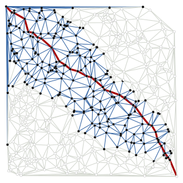
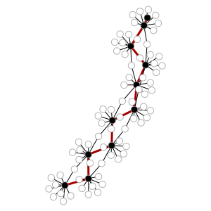

graph_tool.search - Search algorithms¶
This module includes several search algorithms, which are customizable to arbitrary purposes. It is mostly a wrapper around the Visitor interface of the Boost Graph Library, and the respective search functions.
Summary¶
bfs_search |
Breadth-first traversal of a directed or undirected graph. |
dfs_search |
Depth-first traversal of a directed or undirected graph. |
dijkstra_search |
Dijsktra traversal of a directed or undirected graph, with non-negative weights. |
bellman_ford_search |
Bellman-Ford traversal of a directed or undirected graph, with negative weights. |
astar_search |
Heuristic \(A^*\) search on a weighted, directed or undirected graph for the case where all edge weights are non-negative. |
BFSVisitor |
A visitor object that is invoked at the event-points inside the bfs_search() algorithm. |
DFSVisitor |
A visitor object that is invoked at the event-points inside the dfs_search() algorithm. |
DijkstraVisitor |
A visitor object that is invoked at the event-points inside the dijkstra_search() algorithm. |
BellmanFordVisitor |
A visitor object that is invoked at the event-points inside the bellman_ford_search() algorithm. |
AStarVisitor |
A visitor object that is invoked at the event-points inside the astar_search() algorithm. |
StopSearch |
If this exception is raised from inside any search visitor object, the search is aborted. |
Examples¶
In this module, most documentation examples will make use of the network
search_example.xml, shown below.
>>> g = gt.load_graph("search_example.xml")
>>> name = g.vp["name"]
>>> weight = g.ep["weight"]
>>> pos = g.vp["pos"]
>>> gt.graph_draw(g, pos, vertex_text=name, vertex_font_size=12, vertex_shape="double_circle",
... vertex_fill_color="#729fcf", vertex_pen_width=3,
... edge_pen_width=weight, output="search_example.pdf")
<...>
This is the network used in the examples below. The width of the edges correspond to the values of the “weight” property map.
Contents¶
-
class
graph_tool.search.BFSVisitor[source]¶ A visitor object that is invoked at the event-points inside the
bfs_search()algorithm. By default, it performs no action, and should be used as a base class in order to be useful.-
initialize_vertex(u)[source]¶ This is invoked on every vertex of the graph before the start of the graph search.
-
examine_vertex(u)[source]¶ This is invoked on a vertex as it is popped from the queue. This happens immediately before examine_edge() is invoked on each of the out-edges of vertex u.
-
tree_edge(e)[source]¶ This is invoked on each edge as it becomes a member of the edges that form the search tree.
-
non_tree_edge(e)[source]¶ This is invoked on back or cross edges for directed graphs and cross edges for undirected graphs.
-
gray_target(e)[source]¶ This is invoked on the subset of non-tree edges whose target vertex is colored gray at the time of examination. The color gray indicates that the vertex is currently in the queue.
-
-
graph_tool.search.bfs_search(g, source, visitor=<graph_tool.search.BFSVisitor object>)[source]¶ Breadth-first traversal of a directed or undirected graph.
Parameters: g :
GraphGraph to be used.
source :
VertexSource vertex.
visitor :
BFSVisitor(optional, default:BFSVisitor())A visitor object that is invoked at the event points inside the algorithm. This should be a subclass of
BFSVisitor.See also
dfs_search- Depth-first search
dijkstra_search- Dijkstra’s search algorithm
astar_search- \(A^*\) heuristic search algorithm
Notes
A breadth-first traversal visits vertices that are closer to the source before visiting vertices that are further away. In this context “distance” is defined as the number of edges in the shortest path from the source vertex.
The time complexity is \(O(V + E)\).
The pseudo-code for the BFS algorithm is listed below, with the annotated event points, for which the given visitor object will be called with the appropriate method.
BFS(G, source) for each vertex u in V[G] initialize vertex u color[u] := WHITE d[u] := infinity end for color[source] := GRAY d[source] := 0 ENQUEUE(Q, source) discover vertex source while (Q != Ø) u := DEQUEUE(Q) examine vertex u for each vertex v in Adj[u] examine edge (u,v) if (color[v] = WHITE) (u,v) is a tree edge color[v] := GRAY ENQUEUE(Q, v) discover vertex v else (u,v) is a non-tree edge if (color[v] = GRAY) ... (u,v) has a gray target else ... (u,v) has a black target end for color[u] := BLACK finish vertex u end whileReferences
[bfs] Edward Moore, “The shortest path through a maze”, International Symposium on the Theory of Switching, 1959 [bfs-bgl] http://www.boost.org/doc/libs/release/libs/graph/doc/breadth_first_search.html [bfs-wikipedia] http://en.wikipedia.org/wiki/Breadth-first_search Examples
We must define what should be done during the search by subclassing
BFSVisitor, and specializing the appropriate methods. In the following we will keep track of the distance from the root, and the predecessor tree.class VisitorExample(gt.BFSVisitor): def __init__(self, name, pred, dist): self.name = name self.pred = pred self.dist = dist def discover_vertex(self, u): print("-->", self.name[u], "has been discovered!") def examine_vertex(self, u): print(self.name[u], "has been examined...") def tree_edge(self, e): self.pred[e.target()] = int(e.source()) self.dist[e.target()] = self.dist[e.source()] + 1
With the above class defined, we can perform the BFS search as follows.
>>> dist = g.new_vertex_property("int") >>> pred = g.new_vertex_property("int") >>> gt.bfs_search(g, g.vertex(0), VisitorExample(name, pred, dist)) --> Bob has been discovered! Bob has been examined... --> Eve has been discovered! --> Chuck has been discovered! --> Carlos has been discovered! --> Isaac has been discovered! Eve has been examined... --> Carol has been discovered! --> Imothep has been discovered! Chuck has been examined... Carlos has been examined... --> Alice has been discovered! Isaac has been examined... Carol has been examined... Imothep has been examined... Alice has been examined... --> Oscar has been discovered! --> Dave has been discovered! Oscar has been examined... Dave has been examined... >>> print(dist.a) [0 2 2 1 1 3 1 1 3 2] >>> print(pred.a) [0 3 6 0 0 1 0 0 1 6]
-
class
graph_tool.search.DFSVisitor[source]¶ A visitor object that is invoked at the event-points inside the
dfs_search()algorithm. By default, it performs no action, and should be used as a base class in order to be useful.-
initialize_vertex(u)[source]¶ This is invoked on every vertex of the graph before the start of the graph search.
-
tree_edge(e)[source]¶ This is invoked on each edge as it becomes a member of the edges that form the search tree.
-
back_edge(e)[source]¶ This is invoked on the back edges in the graph. For an undirected graph there is some ambiguity between tree edges and back edges since the edge (u,v) and (v,u) are the same edge, but both the
tree_edge()andback_edge()functions will be invoked. One way to resolve this ambiguity is to record the tree edges, and then disregard the back-edges that are already marked as tree edges. An easy way to record tree edges is to record predecessors at the tree_edge event point.
-
-
graph_tool.search.dfs_search(g, source, visitor=<graph_tool.search.DFSVisitor object>)[source]¶ Depth-first traversal of a directed or undirected graph.
Parameters: g :
GraphGraph to be used.
source :
VertexSource vertex.
visitor :
DFSVisitor(optional, default:DFSVisitor())A visitor object that is invoked at the event points inside the algorithm. This should be a subclass of
DFSVisitor.See also
bfs_search- Breadth-first search
dijkstra_search- Dijkstra’s search algorithm
astar_search- \(A^*\) heuristic search algorithm
Notes
When possible, a depth-first traversal chooses a vertex adjacent to the current vertex to visit next. If all adjacent vertices have already been discovered, or there are no adjacent vertices, then the algorithm backtracks to the last vertex that had undiscovered neighbors. Once all reachable vertices have been visited, the algorithm selects from any remaining undiscovered vertices and continues the traversal. The algorithm finishes when all vertices have been visited.
The time complexity is \(O(V + E)\).
The pseudo-code for the DFS algorithm is listed below, with the annotated event points, for which the given visitor object will be called with the appropriate method.
DFS(G) for each vertex u in V color[u] := WHITE initialize vertex u end for time := 0 call DFS-VISIT(G, source) start vertex s DFS-VISIT(G, u) color[u] := GRAY discover vertex u for each v in Adj[u] examine edge (u,v) if (color[v] = WHITE) (u,v) is a tree edge call DFS-VISIT(G, v) else if (color[v] = GRAY) (u,v) is a back edge ... else if (color[v] = BLACK) (u,v) is a cross or forward edge ... end for color[u] := BLACK finish vertex uReferences
[dfs-bgl] http://www.boost.org/doc/libs/release/libs/graph/doc/depth_first_search.html [dfs-wikipedia] http://en.wikipedia.org/wiki/Depth-first_search Examples
We must define what should be done during the search by subclassing
DFSVisitor, and specializing the appropriate methods. In the following we will keep track of the discover time, and the predecessor tree.class VisitorExample(gt.DFSVisitor): def __init__(self, name, pred, time): self.name = name self.pred = pred self.time = time self.last_time = 0 def discover_vertex(self, u): print("-->", self.name[u], "has been discovered!") self.time[u] = self.last_time self.last_time += 1 def examine_edge(self, e): print("edge (%s, %s) has been examined..." % \ (self.name[e.source()], self.name[e.target()])) def tree_edge(self, e): self.pred[e.target()] = int(e.source())
With the above class defined, we can perform the DFS search as follows.
>>> time = g.new_vertex_property("int") >>> pred = g.new_vertex_property("int") >>> gt.dfs_search(g, g.vertex(0), VisitorExample(name, pred, time)) --> Bob has been discovered! edge (Bob, Eve) has been examined... --> Eve has been discovered! edge (Eve, Bob) has been examined... edge (Eve, Carol) has been examined... --> Carol has been discovered! edge (Carol, Eve) has been examined... edge (Carol, Imothep) has been examined... --> Imothep has been discovered! edge (Imothep, Carol) has been examined... edge (Imothep, Carlos) has been examined... --> Carlos has been discovered! edge (Carlos, Bob) has been examined... edge (Carlos, Alice) has been examined... --> Alice has been discovered! edge (Alice, Oscar) has been examined... --> Oscar has been discovered! edge (Oscar, Alice) has been examined... edge (Oscar, Dave) has been examined... --> Dave has been discovered! edge (Dave, Alice) has been examined... edge (Dave, Oscar) has been examined... edge (Alice, Dave) has been examined... edge (Alice, Carlos) has been examined... edge (Carlos, Eve) has been examined... edge (Carlos, Imothep) has been examined... edge (Imothep, Chuck) has been examined... --> Chuck has been discovered! edge (Chuck, Bob) has been examined... edge (Chuck, Eve) has been examined... edge (Chuck, Isaac) has been examined... --> Isaac has been discovered! edge (Isaac, Bob) has been examined... edge (Isaac, Chuck) has been examined... edge (Isaac, Eve) has been examined... edge (Chuck, Imothep) has been examined... edge (Imothep, Eve) has been examined... edge (Eve, Carlos) has been examined... edge (Eve, Chuck) has been examined... edge (Eve, Isaac) has been examined... edge (Eve, Imothep) has been examined... edge (Bob, Chuck) has been examined... edge (Bob, Carlos) has been examined... edge (Bob, Isaac) has been examined... >>> print(time.a) [0 5 2 4 8 7 1 9 6 3] >>> print(pred.a) [0 3 6 9 9 8 0 4 1 2]
-
class
graph_tool.search.DijkstraVisitor[source]¶ A visitor object that is invoked at the event-points inside the
dijkstra_search()algorithm. By default, it performs no action, and should be used as a base class in order to be useful.-
initialize_vertex(u)[source]¶ This is invoked on every vertex of the graph before the start of the graph search.
-
examine_vertex(u)[source]¶ This is invoked on a vertex as it is popped from the queue. This happens immediately before
examine_edge()is invoked on each of the out-edges of vertex u.
-
edge_relaxed(e)[source]¶ Upon examination, if the following condition holds then the edge is relaxed (its distance is reduced), and this method is invoked.
(u, v) = tuple(e) assert(compare(combine(d[u], weight[e]), d[v]))
-
-
graph_tool.search.dijkstra_search(g, source, weight, visitor=<graph_tool.search.DijkstraVisitor object>, dist_map=None, pred_map=None, combine=<function <lambda>>, compare=<function <lambda>>, zero=0, infinity=inf)[source]¶ Dijsktra traversal of a directed or undirected graph, with non-negative weights.
Parameters: g :
GraphGraph to be used.
source :
VertexSource vertex.
weight :
PropertyMapEdge property map with weight values.
visitor :
DijkstraVisitor(optional, default:DijkstraVisitor())A visitor object that is invoked at the event points inside the algorithm. This should be a subclass of
DijkstraVisitor.dist_map :
PropertyMap(optional, default:None)A vertex property map where the distances from the source will be stored.
pred_map :
PropertyMap(optional, default:None)A vertex property map where the predecessor map will be stored (must have value type “int”).
combine : binary function (optional, default:
lambda a, b: a + b)This function is used to combine distances to compute the distance of a path.
compare : binary function (optional, default:
lambda a, b: a < b)This function is use to compare distances to determine which vertex is closer to the source vertex.
zero : int or float (optional, default:
0)Value assumed to correspond to a distance of zero by the combine and compare functions.
infinity : int or float (optional, default:
float('inf'))Value assumed to correspond to a distance of infinity by the combine and compare functions.
Returns: dist_map :
PropertyMapA vertex property map with the computed distances from the source.
pred_map :
PropertyMapA vertex property map with the predecessor tree.
See also
bfs_search- Breadth-first search
dfs_search- Depth-first search
astar_search- \(A^*\) heuristic search algorithm
Notes
Dijkstra’s algorithm finds all the shortest paths from the source vertex to every other vertex by iteratively “growing” the set of vertices S to which it knows the shortest path. At each step of the algorithm, the next vertex added to S is determined by a priority queue. The queue contains the vertices in V - S prioritized by their distance label, which is the length of the shortest path seen so far for each vertex. The vertex u at the top of the priority queue is then added to S, and each of its out-edges is relaxed: if the distance to u plus the weight of the out-edge (u,v) is less than the distance label for v then the estimated distance for vertex v is reduced. The algorithm then loops back, processing the next vertex at the top of the priority queue. The algorithm finishes when the priority queue is empty.
The time complexity is \(O(V \log V)\).
The pseudo-code for Dijkstra’s algorithm is listed below, with the annotated event points, for which the given visitor object will be called with the appropriate method.
DIJKSTRA(G, source, weight) for each vertex u in V initialize vertex u d[u] := infinity p[u] := u end for d[source] := 0 INSERT(Q, source) discover vertex s while (Q != Ø) u := EXTRACT-MIN(Q) examine vertex u for each vertex v in Adj[u] examine edge (u,v) if (weight[(u,v)] + d[u] < d[v]) edge (u,v) relaxed d[v] := weight[(u,v)] + d[u] p[v] := u DECREASE-KEY(Q, v) else edge (u,v) not relaxed ... if (d[v] was originally infinity) INSERT(Q, v) discover vertex v end for finish vertex u end while return dReferences
[dijkstra] E. Dijkstra, “A note on two problems in connexion with graphs”, Numerische Mathematik, 1:269-271, 1959. [dijkstra-bgl] http://www.boost.org/doc/libs/release/libs/graph/doc/dijkstra_shortest_paths_no_color_map.html [dijkstra-wikipedia] http://en.wikipedia.org/wiki/Dijkstra’s_algorithm Examples
We must define what should be done during the search by subclassing
DijkstraVisitor, and specializing the appropriate methods. In the following we will keep track of the discover time, and the predecessor tree.class VisitorExample(gt.DijkstraVisitor): def __init__(self, name, time): self.name = name self.time = time self.last_time = 0 def discover_vertex(self, u): print("-->", self.name[u], "has been discovered!") self.time[u] = self.last_time self.last_time += 1 def examine_edge(self, e): print("edge (%s, %s) has been examined..." % \ (self.name[e.source()], self.name[e.target()])) def edge_relaxed(self, e): print("edge (%s, %s) has been relaxed..." % \ (self.name[e.source()], self.name[e.target()]))
With the above class defined, we can perform the Dijkstra search as follows.
>>> time = g.new_vertex_property("int") >>> dist, pred = gt.dijkstra_search(g, g.vertex(0), weight, VisitorExample(name, time)) --> Bob has been discovered! edge (Bob, Eve) has been examined... edge (Bob, Eve) has been relaxed... --> Eve has been discovered! edge (Bob, Chuck) has been examined... edge (Bob, Chuck) has been relaxed... --> Chuck has been discovered! edge (Bob, Carlos) has been examined... edge (Bob, Carlos) has been relaxed... --> Carlos has been discovered! edge (Bob, Isaac) has been examined... edge (Bob, Isaac) has been relaxed... --> Isaac has been discovered! edge (Eve, Bob) has been examined... edge (Eve, Carol) has been examined... edge (Eve, Carol) has been relaxed... --> Carol has been discovered! edge (Eve, Carlos) has been examined... edge (Eve, Chuck) has been examined... edge (Eve, Isaac) has been examined... edge (Eve, Imothep) has been examined... edge (Eve, Imothep) has been relaxed... --> Imothep has been discovered! edge (Isaac, Bob) has been examined... edge (Isaac, Chuck) has been examined... edge (Isaac, Eve) has been examined... edge (Chuck, Bob) has been examined... edge (Chuck, Eve) has been examined... edge (Chuck, Isaac) has been examined... edge (Chuck, Imothep) has been examined... edge (Carlos, Bob) has been examined... edge (Carlos, Alice) has been examined... edge (Carlos, Alice) has been relaxed... --> Alice has been discovered! edge (Carlos, Eve) has been examined... edge (Carlos, Imothep) has been examined... edge (Imothep, Carol) has been examined... edge (Imothep, Carlos) has been examined... edge (Imothep, Chuck) has been examined... edge (Imothep, Eve) has been examined... edge (Alice, Oscar) has been examined... edge (Alice, Oscar) has been relaxed... --> Oscar has been discovered! edge (Alice, Dave) has been examined... edge (Alice, Dave) has been relaxed... --> Dave has been discovered! edge (Alice, Carlos) has been examined... edge (Carol, Eve) has been examined... edge (Carol, Imothep) has been examined... edge (Oscar, Alice) has been examined... edge (Oscar, Dave) has been examined... edge (Dave, Alice) has been examined... edge (Dave, Oscar) has been examined... >>> print(time.a) [0 7 5 3 2 9 1 4 8 6] >>> print(pred.a) [0 3 6 0 0 1 0 0 1 6] >>> print(dist.a) [ 0. 8.91915887 9.27141329 4.29277116 4.02118246 12.23513866 3.23790211 3.45487436 11.04391549 7.74858396]
-
class
graph_tool.search.BellmanFordVisitor[source]¶ A visitor object that is invoked at the event-points inside the
bellman_ford_search()algorithm. By default, it performs no action, and should be used as a base class in order to be useful.-
edge_relaxed(e)[source]¶ This is invoked when the distance label for the target vertex is decreased. The edge (u,v) that participated in the last relaxation for vertex v is an edge in the shortest paths tree.
-
edge_not_relaxed(e)[source]¶ This is invoked if the distance label for the target vertex is not decreased.
-
-
graph_tool.search.bellman_ford_search(g, source, weight, visitor=<graph_tool.search.BellmanFordVisitor object>, dist_map=None, pred_map=None, combine=<function <lambda>>, compare=<function <lambda>>, zero=0, infinity=inf)[source]¶ Bellman-Ford traversal of a directed or undirected graph, with negative weights.
Parameters: g :
GraphGraph to be used.
source :
VertexSource vertex.
weight :
PropertyMapEdge property map with weight values.
visitor :
DijkstraVisitor(optional, default:DijkstraVisitor())A visitor object that is invoked at the event points inside the algorithm. This should be a subclass of
DijkstraVisitor.dist_map :
PropertyMap(optional, default:None)A vertex property map where the distances from the source will be stored.
pred_map :
PropertyMap(optional, default:None)A vertex property map where the predecessor map will be stored (must have value type “int”).
combine : binary function (optional, default:
lambda a, b: a + b)This function is used to combine distances to compute the distance of a path.
compare : binary function (optional, default:
lambda a, b: a < b)This function is use to compare distances to determine which vertex is closer to the source vertex.
zero : int or float (optional, default:
0)Value assumed to correspond to a distance of zero by the combine and compare functions.
infinity : int or float (optional, default:
float('inf'))Value assumed to correspond to a distance of infinity by the combine and compare functions.
Returns: minimized : bool
True if all edges were successfully minimized, or False if there is a negative loop in the graph.
dist_map :
PropertyMapA vertex property map with the computed distances from the source.
pred_map :
PropertyMapA vertex property map with the predecessor tree.
See also
bfs_search- Breadth-first search
dfs_search- Depth-first search
dijsktra_search- Dijkstra search
astar_search- \(A^*\) heuristic search
Notes
The Bellman-Ford algorithm [bellman-ford] solves the single-source shortest paths problem for a graph with both positive and negative edge weights. If you only need to solve the shortest paths problem for positive edge weights,
dijkstra_search()provides a more efficient alternative. If all the edge weights are all equal, thenbfs_search()provides an even more efficient alternative.The Bellman-Ford algorithm proceeds by looping through all of the edges in the graph, applying the relaxation operation to each edge. In the following pseudo-code,
vis a vertex adjacent tou,wmaps edges to their weight, anddis a distance map that records the length of the shortest path to each vertex seen so far.pis a predecessor map which records the parent of each vertex, which will ultimately be the parent in the shortest paths treeRELAX(u, v, w, d, p) if (w(u,v) + d[u] < d[v]) d[v] := w(u,v) + d[u] relax edge (u,v) p[v] := u else ... edge (u,v) is not relaxedThe algorithm repeats this loop
|V|times after which it is guaranteed that the distances to each vertex have been reduced to the minimum possible unless there is a negative cycle in the graph. If there is a negative cycle, then there will be edges in the graph that were not properly minimized. That is, there will be edges(u,v)such thatw(u,v) + d[u] < d[v]. The algorithm loops over the edges in the graph one final time to check if all the edges were minimized, returning true if they were and returning false otherwise.BELLMAN-FORD(G) for each vertex u in V d[u] := infinity p[u] := u end for for i := 1 to |V|-1 for each edge (u,v) in E examine edge (u,v) RELAX(u, v, w, d, p) end for end for for each edge (u,v) in E if (w(u,v) + d[u] < d[v]) return (false, , ) edge (u,v) was not minimized else ... edge (u,v) was minimized end for return (true, p, d)The time complexity is \(O(V E)\).
References
[bellman-ford] (1, 2) R. Bellman, “On a routing problem”, Quarterly of Applied Mathematics, 16(1):87-90, 1958. [bellman-ford-bgl] http://www.boost.org/doc/libs/release/libs/graph/doc/bellman_ford_shortest.html [bellman-ford-wikipedia] http://en.wikipedia.org/wiki/Bellman-Ford_algorithm Examples
We must define what should be done during the search by subclassing
BellmanFordVisitor, and specializing the appropriate methods. In the following we will keep track of the edge minimizations.class VisitorExample(gt.BellmanFordVisitor): def __init__(self, name): self.name = name def edge_minimized(self, e): print("edge (%s, %s) has been minimized..." % \ (self.name[e.source()], self.name[e.target()])) def edge_not_minimized(self, e): print("edge (%s, %s) has not been minimized..." % \ (self.name[e.source()], self.name[e.target()]))
With the above class defined, we can perform the Bellman-Ford search as follows.
>>> nweight = g.copy_property(weight) >>> nweight.a[6] *= -1 # include negative weight in edge (Carlos, Alice) >>> minimized, dist, pred = gt.bellman_ford_search(g, g.vertex(0), nweight, VisitorExample(name)) edge (Bob, Eve) has been minimized... edge (Bob, Chuck) has been minimized... edge (Bob, Carlos) has been minimized... edge (Bob, Isaac) has been minimized... edge (Alice, Oscar) has been minimized... edge (Alice, Dave) has been minimized... edge (Alice, Carlos) has been minimized... edge (Carol, Eve) has been minimized... edge (Carol, Imothep) has been minimized... edge (Carlos, Eve) has been minimized... edge (Carlos, Imothep) has been minimized... edge (Chuck, Eve) has been minimized... edge (Chuck, Isaac) has been minimized... edge (Chuck, Imothep) has been minimized... edge (Dave, Oscar) has been minimized... edge (Eve, Isaac) has been minimized... edge (Eve, Imothep) has been minimized... >>> print(minimized) True >>> print(pred.a) [3 3 9 1 6 1 3 6 1 3] >>> print(dist.a) [-28.42555934 -37.34471821 -25.20438243 -41.97110592 -35.20316571 -34.02873843 -36.58860946 -33.55645565 -35.2199616 -36.0029274 ]
-
class
graph_tool.search.AStarVisitor[source]¶ A visitor object that is invoked at the event-points inside the
astar_search()algorithm. By default, it performs no action, and should be used as a base class in order to be useful.-
initialize_vertex(u)[source]¶ This is invoked on every vertex of the graph before the start of the graph search.
-
examine_vertex(u)[source]¶ This is invoked on a vertex as it is popped from the queue (i.e. it has the lowest cost on the
OPENlist). This happens immediately before examine_edge() is invoked on each of the out-edges of vertex u.
-
discover_vertex(u)[source]¶ This is invoked when a vertex is first discovered and is added to the
OPENlist.
-
edge_relaxed(e)[source]¶ Upon examination, if the following condition holds then the edge is relaxed (its distance is reduced), and this method is invoked.
(u, v) = tuple(e) assert(compare(combine(d[u], weight[e]), d[v]))
-
edge_not_relaxed(e)[source]¶ Upon examination, if the edge is not relaxed (see
edge_relaxed()) then this method is invoked.
-
-
graph_tool.search.astar_search(g, source, weight, visitor=<graph_tool.search.AStarVisitor object>, heuristic=<function <lambda>>, dist_map=None, pred_map=None, cost_map=None, combine=<function <lambda>>, compare=<function <lambda>>, zero=0, infinity=inf, implicit=False)[source]¶ Heuristic \(A^*\) search on a weighted, directed or undirected graph for the case where all edge weights are non-negative.
Parameters: g :
GraphGraph to be used.
source :
VertexSource vertex.
weight :
PropertyMapEdge property map with weight values.
visitor :
AStarVisitor(optional, default:AStarVisitor())A visitor object that is invoked at the event points inside the algorithm. This should be a subclass of
AStarVisitor.heuristic : unary function (optional, default:
lambda v: 1)The heuristic function that guides the search. It should take a single argument which is a
Vertex, and output an estimated distance from the supplied vertex to the target vertex.dist_map :
PropertyMap(optional, default:None)A vertex property map where the distances from the source will be stored.
pred_map :
PropertyMap(optional, default:None)A vertex property map where the predecessor map will be stored (must have value type “int”).
cost_map :
PropertyMap(optional, default:None)A vertex property map where the vertex costs will be stored. It must have the same value type as
dist_map. This parameter is only used ifimplicitis True.combine : binary function (optional, default:
lambda a, b: a + b)This function is used to combine distances to compute the distance of a path.
compare : binary function (optional, default:
lambda a, b: a < b)This function is use to compare distances to determine which vertex is closer to the source vertex.
implicit : bool (optional, default:
False)If true, the underlying graph will be assumed to be implicit (i.e. constructed during the search).
zero : int or float (optional, default:
0)Value assumed to correspond to a distance of zero by the combine and compare functions.
infinity : int or float (optional, default:
float('inf'))Value assumed to correspond to a distance of infinity by the combine and compare functions.
Returns: dist_map :
PropertyMapA vertex property map with the computed distances from the source.
pred_map :
PropertyMapA vertex property map with the predecessor tree.
See also
bfs_search- Breadth-first search
dfs_search- Depth-first search
dijkstra_search- Dijkstra’s search algorithm
Notes
The \(A^*\) algorithm is a heuristic graph search algorithm: an \(A^*\) search is “guided” by a heuristic function. A heuristic function \(h(v)\) is one which estimates the cost from a non-goal state (v) in the graph to some goal state, t. Intuitively, \(A^*\) follows paths (through the graph) to the goal that are estimated by the heuristic function to be the best paths. Unlike best-first search, \(A^*\) takes into account the known cost from the start of the search to v; the paths \(A^*\) takes are guided by a function \(f(v) = g(v) + h(v)\), where \(h(v)\) is the heuristic function, and \(g(v)\) (sometimes denoted \(c(s, v)\)) is the known cost from the start to v. Clearly, the efficiency of \(A^*\) is highly dependent on the heuristic function with which it is used.
The time complexity is \(O((E + V) \log V)\).
The pseudo-code for the \(A^*\) algorithm is listed below, with the annotated event points, for which the given visitor object will be called with the appropriate method.
A*(G, source, h) for each vertex u in V initialize vertex u d[u] := f[u] := infinity color[u] := WHITE end for color[s] := GRAY d[s] := 0 f[s] := h(source) INSERT(Q, source) discover vertex source while (Q != Ø) u := EXTRACT-MIN(Q) examine vertex u for each vertex v in Adj[u] examine edge (u,v) if (w(u,v) + d[u] < d[v]) d[v] := w(u,v) + d[u] edge (u,v) relaxed f[v] := d[v] + h(v) if (color[v] = WHITE) color[v] := GRAY INSERT(Q, v) discover vertex v else if (color[v] = BLACK) color[v] := GRAY INSERT(Q, v) reopen vertex v end if else ... edge (u,v) not relaxed end for color[u] := BLACK finish vertex u end whileReferences
[astar] Hart, P. E.; Nilsson, N. J.; Raphael, B. “A Formal Basis for the Heuristic Determination of Minimum Cost Paths”. IEEE Transactions on Systems Science and Cybernetics SSC4 4 (2): 100-107, 1968. DOI: 10.1109/TSSC.1968.300136 [astar-bgl] http://www.boost.org/doc/libs/release/libs/graph/doc/astar_search.html [astar-wikipedia] http://en.wikipedia.org/wiki/A*_search_algorithm Examples
We will use an irregular two-dimensional lattice as an example, where the heuristic function will be based on the euclidean distance to the target.
The heuristic function will be defined as:
def h(v, target, pos): return sqrt(sum((pos[v].a - pos[target].a) ** 2))
where
posis the vertex position in the plane.We must define what should be done during the search by subclassing
AStarVisitor, and specializing the appropriate methods. In the following we will keep track of the discovered vertices, and which edges were examined, as well as the predecessor tree. We will also abort the search when a given target vertex is found, by raising theStopSearchexception.class VisitorExample(gt.AStarVisitor): def __init__(self, touched_v, touched_e, target): self.touched_v = touched_v self.touched_e = touched_e self.target = target def discover_vertex(self, u): self.touched_v[u] = True def examine_edge(self, e): self.touched_e[e] = True def edge_relaxed(self, e): if e.target() == self.target: raise gt.StopSearch()
With the above class defined, we can perform the \(A^*\) search as follows.
>>> points = random((500, 2)) * 4 >>> points[0] = [-0.01, 0.01] >>> points[1] = [4.01, 4.01] >>> g, pos = gt.triangulation(points, type="delaunay") >>> weight = g.new_edge_property("double") # Edge weights corresponding to ... # Euclidean distances >>> for e in g.edges(): ... weight[e] = sqrt(sum((pos[e.source()].a - ... pos[e.target()].a) ** 2)) >>> touch_v = g.new_vertex_property("bool") >>> touch_e = g.new_edge_property("bool") >>> target = g.vertex(1) >>> dist, pred = gt.astar_search(g, g.vertex(0), weight, ... VisitorExample(touch_v, touch_e, target), ... heuristic=lambda v: h(v, target, pos))
We can now observe the best path found, and how many vertices and edges were visited in the process.
>>> ecolor = g.new_edge_property("string") >>> ewidth = g.new_edge_property("double") >>> ewidth.a = 1 >>> for e in g.edges(): ... ecolor[e] = "#3465a4" if touch_e[e] else "#d3d7cf" >>> v = target >>> while v != g.vertex(0): ... p = g.vertex(pred[v]) ... for e in v.out_edges(): ... if e.target() == p: ... ecolor[e] = "#a40000" ... ewidth[e] = 3 ... v = p >>> gt.graph_draw(g, pos=pos, output_size=(300, 300), vertex_fill_color=touch_v, ... vcmap=matplotlib.cm.binary, edge_color=ecolor, ... edge_pen_width=ewidth, output="astar-delaunay.pdf") <...>
The shortest path is shown in red. The visited edges are shown in blue, and the visited vertices in black.
The \(A^*\) algorithm is very useful for searching implicit graphs, i.e. graphs which are not entirely stored in memory and are generated “on-the-fly” during the search. In the following example we will carry out a search in a hamming hypercube of 10 bits witch has random weights on its edges in the range \([0,1]\). The vertices of the hypercube will be created during the search.
The heuristic function will use the Hamming distance between vertices:
def h(v, target, state): return sum(abs(state[v].a - target)) / 2
In the following visitor we will keep growing the graph on-the-fly, and abort the search when a given target vertex is found, by raising the
StopSearchexception.from numpy.random import random class HammingVisitor(gt.AStarVisitor): def __init__(self, g, target, state, weight, dist, cost): self.g = g self.state = state self.target = target self.weight = weight self.dist = dist self.cost = cost self.visited = {} def examine_vertex(self, u): for i in range(len(self.state[u])): nstate = list(self.state[u]) nstate[i] ^= 1 if tuple(nstate) in self.visited: v = self.visited[tuple(nstate)] else: v = self.g.add_vertex() self.visited[tuple(nstate)] = v self.state[v] = nstate self.dist[v] = self.cost[v] = float('inf') for e in u.out_edges(): if e.target() == v: break else: e = self.g.add_edge(u, v) self.weight[e] = random() self.visited[tuple(self.state[u])] = u def edge_relaxed(self, e): if self.state[e.target()] == self.target: self.visited[tuple(self.target)] = e.target() raise gt.StopSearch()
With the above class defined, we can perform the \(A^*\) search as follows.
>>> g = gt.Graph(directed=False) >>> state = g.new_vertex_property("vector<bool>") >>> v = g.add_vertex() >>> state[v] = [0] * 10 >>> target = [1] * 10 >>> weight = g.new_edge_property("double") >>> dist = g.new_vertex_property("double") >>> cost = g.new_vertex_property("double") >>> visitor = HammingVisitor(g, target, state, weight, dist, cost) >>> dist, pred = gt.astar_search(g, g.vertex(0), weight, visitor, dist_map=dist, ... cost_map=cost, heuristic=lambda v: h(v, array(target), state), ... implicit=True)
We can now observe the best path found, and how many vertices and edges were visited in the process.
>>> ecolor = g.new_edge_property("string") >>> vcolor = g.new_vertex_property("string") >>> ewidth = g.new_edge_property("double") >>> ewidth.a = 1 >>> for e in g.edges(): ... ecolor[e] = "black" >>> for v in g.vertices(): ... vcolor[v] = "white" >>> v = visitor.visited[tuple(target)] >>> while v != g.vertex(0): ... vcolor[v] = "black" ... p = g.vertex(pred[v]) ... for e in v.out_edges(): ... if e.target() == p: ... ecolor[e] = "#a40000" ... ewidth[e] = 3 ... v = p >>> vcolor[v] = "black" >>> pos = gt.graph_draw(g, output_size=(300, 300), vertex_fill_color=vcolor, edge_color=ecolor, ... edge_pen_width=ewidth, output="astar-implicit.pdf")
The shortest path is shown in red, and the vertices which belong to it are in black. Note that the number of vertices visited is much smaller than the total number \(2^{10} = 1024\).